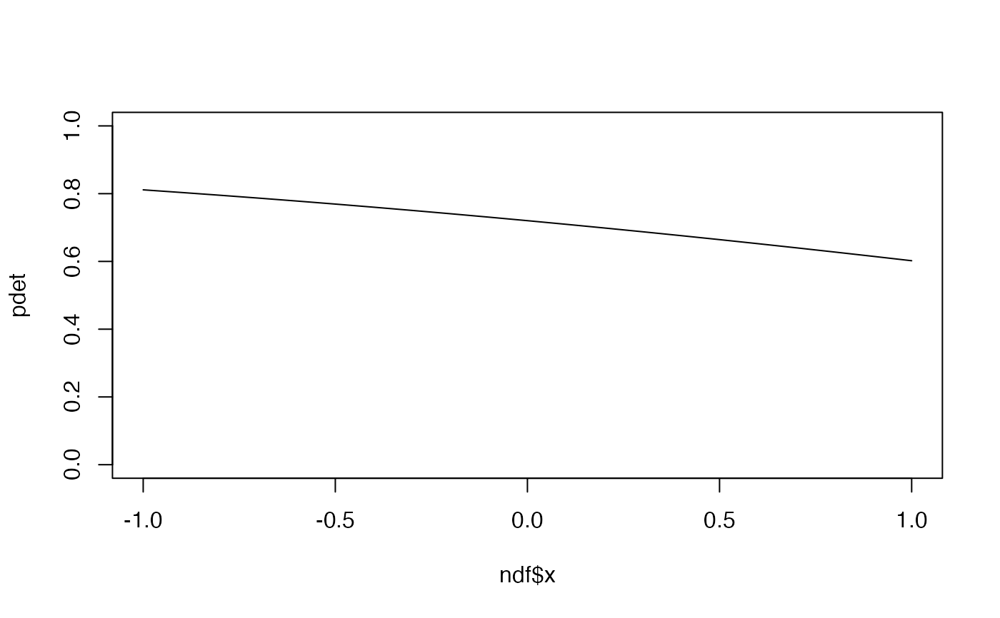
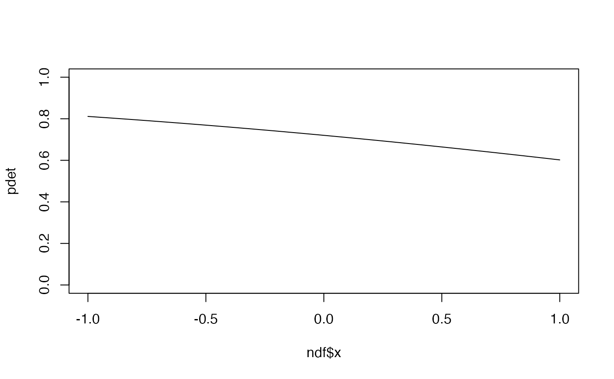

Conditional Multinomial Maximum Likelihood Estimation
cmulti.RdConditional Multinomial Maximum Likelihood Estimation for different sampling methodologies.
Usage
cmulti(formula, data, type = c("rem", "mix", "dis", "fmix"),
inits = NULL, method = "Nelder-Mead", ...)
cmulti.fit(Y, D, X=NULL, type=c("rem", "mix", "dis", "fmix"),
inits=NULL, method="Nelder-Mead", ...)
cmulti2.fit(Y, D1, D2, X1=NULL, X2=NULL,
inits=NULL, method="Nelder-Mead", ...)
# S3 method for cmulti
fitted(object, ...)
# S3 method for cmulti
model.frame(formula, ...)
# S3 method for cmulti
model.matrix(object, ...)
# S3 method for cmulti
predict(object, newdata = NULL,
type = c("link", "response"), ...)Arguments
- formula
formula, LHS takes 2 matrices in the form of
Y | D, RHS is either1or some covariates, see Examples.- data
data.
- type
character, one of
"rem"(removal sampling, homogeneous singing rates),"mix"and"fmix"(removal sampling, heterogeneous singing rates,"mix"implies that 'phi' is constant but 'c' can vary;"fmix"implies that 'c' is constant but 'phi' can vary),"dis"(distance sampling, half-normal detection function for point counts, circular area). For thepredictmethod it is thetypeof prediction required; the default is on the scale of the linear predictors; the alternative"response"is on the scale of the response variable.- Y
this contains the cell counts.
cmulti.fitrequires thatYis a matrix (observations x intervals), dimensions and pattern inNAs must match that ofD.cmulti2.fitrequires thatYis a 3-dimensional array (observations x time intervals x distance intervals), dimensions and pattern inNAs must match that ofD1andD2.- D, D1, D2
design matrices, that describe the interval endpoints for the sampling methodology, dimensions must match dimensions of
Y.- X, X1, X2
design matrices,
Xis the matrix with covariates for the removal/distance sampling parameters.X1is the matrix with covariates for the removal,X2is the matrix with covariates for the distance sampling parameters.- inits
optional initial values.
- method
method for
optim.- object
fitted model object.
- newdata
optionally, a data frame in which to look for variables with which to predict. If omitted, the fitted linear predictors are used.
- ...
additional options for
optim.
References
Solymos, P., Matsuoka, S. M., Bayne, E. M., Lele, S. R., Fontaine, P., Cumming, S. G., Stralberg, D., Schmiegelow, F. K. A. & Song, S. J., 2013. Calibrating indices of avian density from non-standardized survey data: making the most of a messy situation. Methods in Ecology and Evolution, 4, 1047--1058. <doi:10.1111/2041-210X.12106>
Solymos, P., Matsuoka, S. M., Cumming, S. G., Stralberg, D., Fontaine, P., Schmiegelow, F. K. A., Song, S. J., and Bayne, E. M., 2018. Evaluating time-removal models for estimating availability of boreal birds during point-count surveys: sample size requirements and model complexity. Condor, 120, 765--786. <doi:10.1650/CONDOR-18-32.1>
Supporting info, including a tutorial for the QPAD method: https://github.com/psolymos/QPAD/tree/master/inst/doc/v2
Examples
simfun1 <- function(n = 10, phi = 0.1, c=1, tau=0.8, type="rem") {
if (type=="dis") {
Dparts <- matrix(c(0.5, 1, NA,
0.5, 1, Inf,
1, Inf, NA), 3, 3, byrow=TRUE)
D <- Dparts[sample.int(3, n, replace=TRUE),]
CP <- 1-exp(-(D/tau)^2)
} else {
Dparts <- matrix(c(5, 10, NA,
3, 5, 10,
3, 5, NA), 3, 3, byrow=TRUE)
D <- Dparts[sample.int(3, n, replace=TRUE),]
CP <- 1-c*exp(-D*phi)
}
k <- ncol(D)
P <- CP - cbind(0, CP[, -k, drop=FALSE])
Psum <- rowSums(P, na.rm=TRUE)
PPsum <- P / Psum
Pok <- !is.na(PPsum)
N <- rpois(n, 10)
Y <- matrix(NA, ncol(PPsum), nrow(PPsum))
Ypre <- sapply(1:n, function(i) rmultinom(1, N, PPsum[i,Pok[i,]]))
Y[t(Pok)] <- unlist(Ypre)
Y <- t(Y)
list(Y=Y, D=D)
}
n <- 200
x <- rnorm(n)
X <- cbind(1, x)
## removal, constant
vv <- simfun1(n=n, phi=exp(-1.5))
m1 <- cmulti(vv$Y | vv$D ~ 1, type="rem")
coef(m1)
#> log.phi_(Intercept)
#> -1.428654
## mixture, constant (mix and fmix are identical)
vv <- simfun1(n=n, phi=exp(-1.5), c=plogis(0.8))
m2 <- cmulti(vv$Y | vv$D ~ 1, type="mix")
coef(m2)
#> log.phi logit.c_(Intercept)
#> -1.5307374 0.7306286
m2f <- cmulti(vv$Y | vv$D ~ 1, type="fmix")
coef(m2f)
#> log.phi_(Intercept) logit.c
#> -1.5307374 0.7306286
## dist, constant
vv <- simfun1(n=n, tau=exp(-0.2), type="dis")
m3 <- cmulti(vv$Y | vv$D ~ 1, type="dis")
coef(m3)
#> log.tau_(Intercept)
#> -0.1983656
## removal, not constant
log.phi <- crossprod(t(X), c(-2,-1))
vv <- simfun1(n=n, phi=exp(cbind(log.phi, log.phi, log.phi)))
m1 <- cmulti(vv$Y | vv$D ~ x, type="rem")
coef(m1)
#> log.phi_(Intercept) log.phi_x
#> -1.948791 -0.989509
## mixture, fixed phi, varying c
logit.c <- crossprod(t(X), c(-2,1))
vv <- simfun1(n=n, phi=exp(-1.5), c=plogis(cbind(logit.c, logit.c, logit.c)))
m2 <- cmulti(vv$Y | vv$D ~ x, type="mix")
coef(m2)
#> log.phi logit.c_(Intercept) logit.c_x
#> -1.178470 -1.921110 1.473748
## mixture, varying phi, fixed c
log.phi <- crossprod(t(X), c(-2,-1))
vv <- simfun1(n=n, phi=exp(cbind(log.phi, log.phi, log.phi)), c=plogis(0.8))
m2f <- cmulti(vv$Y | vv$D ~ x, type="fmix")
coef(m2f)
#> log.phi_(Intercept) log.phi_x logit.c
#> -2.121427 -1.205123 1.066365
## dist, not constant
log.tau <- crossprod(t(X), c(-0.5,-0.2))
vv <- simfun1(n=n, tau=exp(cbind(log.tau, log.tau, log.tau)), type="dis")
m3 <- cmulti(vv$Y | vv$D ~ x, type="dis")
coef(m3)
#> log.tau_(Intercept) log.tau_x
#> -0.5201389 -0.1978845
summary(m3)
#>
#> Call:
#> cmulti(formula = vv$Y | vv$D ~ x, type = "dis")
#>
#> Distance Sampling (half-normal, circular area)
#> Conditional Maximum Likelihood estimates
#>
#> Coefficients:
#> Estimate Std. Error z value Pr(>|z|)
#> log.tau_(Intercept) -0.52014 0.01673 -31.10 <2e-16 ***
#> log.tau_x -0.19788 0.01673 -11.83 <2e-16 ***
#> ---
#> Signif. codes: 0 '***' 0.001 '**' 0.01 '*' 0.05 '.' 0.1 ' ' 1
#>
#> Log-likelihood: -331
#> BIC = 672.6
#>
coef(m3)
#> log.tau_(Intercept) log.tau_x
#> -0.5201389 -0.1978845
vcov(m3)
#> log.tau_(Intercept) log.tau_x
#> log.tau_(Intercept) 2.797469e-04 -2.232051e-05
#> log.tau_x -2.232051e-05 2.799016e-04
AIC(m3)
#> [1] 665.9889
confint(m3)
#> 2.5 % 97.5 %
#> log.tau_(Intercept) -0.5529205 -0.4873573
#> log.tau_x -0.2306752 -0.1650938
logLik(m3)
#> 'log Lik.' -330.9945 (df=2)
## fitted values
plot(exp(log.tau), fitted(m3))
 ## prediction for new locations (type = 'rem')
ndf <- data.frame(x=seq(-1, 1, by=0.1))
summary(predict(m1, newdata=ndf, type="link"))
#> Min. 1st Qu. Median Mean 3rd Qu. Max.
#> -2.9383 -2.4435 -1.9488 -1.9488 -1.4540 -0.9593
summary(pr1 <- predict(m1, newdata=ndf, type="response"))
#> Min. 1st Qu. Median Mean 3rd Qu. Max.
#> 0.05296 0.08685 0.14245 0.16942 0.23363 0.38317
## turing singing rates into probabilities requires total duration
## 5 minutes used here
psing <- 1-exp(-5*pr1)
plot(ndf$x, psing, type="l", ylim=c(0,1))
## prediction for new locations (type = 'rem')
ndf <- data.frame(x=seq(-1, 1, by=0.1))
summary(predict(m1, newdata=ndf, type="link"))
#> Min. 1st Qu. Median Mean 3rd Qu. Max.
#> -2.9383 -2.4435 -1.9488 -1.9488 -1.4540 -0.9593
summary(pr1 <- predict(m1, newdata=ndf, type="response"))
#> Min. 1st Qu. Median Mean 3rd Qu. Max.
#> 0.05296 0.08685 0.14245 0.16942 0.23363 0.38317
## turing singing rates into probabilities requires total duration
## 5 minutes used here
psing <- 1-exp(-5*pr1)
plot(ndf$x, psing, type="l", ylim=c(0,1))
 ## prediction for new locations (type = 'dis')
summary(predict(m3, newdata=ndf, type="link"))
#> Min. 1st Qu. Median Mean 3rd Qu. Max.
#> -0.7180 -0.6191 -0.5201 -0.5201 -0.4212 -0.3223
summary(pr3 <- predict(m3, newdata=ndf, type="response"))
#> Min. 1st Qu. Median Mean 3rd Qu. Max.
#> 0.4877 0.5384 0.5944 0.5987 0.6563 0.7245
## turing EDR into probabilities requires finite truncation distances
## r=0.5 used here (50 m)
r <- 0.5
pdet <- pr3^2*(1-exp(-r^2/pr3^2))/r^2
plot(ndf$x, pdet, type="l", ylim=c(0,1))

## joint removal-distance estimation
## is not different from 2 orthogonal estimations
simfun12 <- function(n = 10, phi = 0.1, c=1, tau=0.8, type="rem") {
Flat <- function(x, DIM, dur=TRUE) {
x <- array(x, DIM)
if (!dur) {
x <- aperm(x,c(1,3,2))
}
dim(x) <- c(DIM[1], DIM[2]*DIM[3])
x
}
Dparts1 <- matrix(c(5, 10, NA,
3, 5, 10,
3, 5, NA), 3, 3, byrow=TRUE)
D1 <- Dparts1[sample.int(3, n, replace=TRUE),]
CP1 <- 1-c*exp(-D1*phi)
Dparts2 <- matrix(c(0.5, 1, NA,
0.5, 1, Inf,
1, Inf, NA), 3, 3, byrow=TRUE)
D2 <- Dparts2[sample.int(3, n, replace=TRUE),]
CP2 <- 1-exp(-(D2/tau)^2)
k1 <- ncol(D1)
k2 <- ncol(D2)
DIM <- c(n, k1, k2)
P1 <- CP1 - cbind(0, CP1[, -k1, drop=FALSE])
P2 <- CP2 - cbind(0, CP2[, -k2, drop=FALSE])
Psum1 <- rowSums(P1, na.rm=TRUE)
Psum2 <- rowSums(P2, na.rm=TRUE)
Pflat <- Flat(P1, DIM, dur=TRUE) * Flat(P2, DIM, dur=FALSE)
PsumFlat <- Psum1 * Psum2
PPsumFlat <- Pflat / PsumFlat
PokFlat <- !is.na(PPsumFlat)
N <- rpois(n, 10)
Yflat <- matrix(NA, ncol(PPsumFlat), nrow(PPsumFlat))
YpreFlat <- sapply(1:n, function(i) rmultinom(1, N, PPsumFlat[i,PokFlat[i,]]))
Yflat[t(PokFlat)] <- unlist(YpreFlat)
Yflat <- t(Yflat)
Y <- array(Yflat, DIM)
k1 <- dim(Y)[2]
k2 <- dim(Y)[3]
Y1 <- t(sapply(1:n, function(i) {
count <- rowSums(Y[i,,], na.rm=TRUE)
nas <- rowSums(is.na(Y[i,,]))
count[nas == k2] <- NA
count
}))
Y2 <- t(sapply(1:n, function(i) {
count <- colSums(Y[i,,], na.rm=TRUE)
nas <- colSums(is.na(Y[i,,]))
count[nas == k2] <- NA
count
}))
list(Y=Y, D1=D1, D2=D2, Y1=Y1, Y2=Y2)
}
## removal and distance, constant
vv <- simfun12(n=n, phi=exp(-1.5), tau=exp(-0.2))
res <- cmulti2.fit(vv$Y, vv$D1, vv$D2)
res1 <- cmulti.fit(vv$Y1, vv$D1, NULL, "rem")
res2 <- cmulti.fit(vv$Y2, vv$D2, NULL, "dis")
## points estimates are identical
cbind(res$coef, c(res1$coef, res2$coef))
#> [,1] [,2]
#> [1,] -1.5585857 -1.5585857
#> [2,] -0.1938484 -0.1938484
## standard errors are identical
cbind(sqrt(diag(res$vcov)),
c(sqrt(diag(res1$vcov)),sqrt(diag(res2$vcov))))
#> [,1] [,2]
#> [1,] 0.05277396 0.05277396
#> [2,] 0.01598005 0.01598005
## removal and distance, not constant
vv <- simfun12(n=n,
phi=exp(cbind(log.phi, log.phi, log.phi)),
tau=exp(cbind(log.tau, log.tau, log.tau)))
res <- cmulti2.fit(vv$Y, vv$D1, vv$D2, X1=X, X2=X)
res1 <- cmulti.fit(vv$Y1, vv$D1, X, "rem")
res2 <- cmulti.fit(vv$Y2, vv$D2, X, "dis")
## points estimates are identical
cbind(res$coef, c(res1$coef, res2$coef))
#> [,1] [,2]
#> [1,] -2.0066423 -2.0068100
#> [2,] -1.0487341 -1.0487368
#> [3,] -0.5196571 -0.5196118
#> [4,] -0.1817182 -0.1817405
## standard errors are identical
cbind(sqrt(diag(res$vcov)),
c(sqrt(diag(res1$vcov)),sqrt(diag(res2$vcov))))
#> [,1] [,2]
#> [1,] 0.09184894 0.09186849
#> [2,] 0.08071062 0.08072127
#> [3,] 0.01472931 0.01472987
#> [4,] 0.01473121 0.01473181
## prediction for new locations (type = 'dis')
summary(predict(m3, newdata=ndf, type="link"))
#> Min. 1st Qu. Median Mean 3rd Qu. Max.
#> -0.7180 -0.6191 -0.5201 -0.5201 -0.4212 -0.3223
summary(pr3 <- predict(m3, newdata=ndf, type="response"))
#> Min. 1st Qu. Median Mean 3rd Qu. Max.
#> 0.4877 0.5384 0.5944 0.5987 0.6563 0.7245
## turing EDR into probabilities requires finite truncation distances
## r=0.5 used here (50 m)
r <- 0.5
pdet <- pr3^2*(1-exp(-r^2/pr3^2))/r^2
plot(ndf$x, pdet, type="l", ylim=c(0,1))

## joint removal-distance estimation
## is not different from 2 orthogonal estimations
simfun12 <- function(n = 10, phi = 0.1, c=1, tau=0.8, type="rem") {
Flat <- function(x, DIM, dur=TRUE) {
x <- array(x, DIM)
if (!dur) {
x <- aperm(x,c(1,3,2))
}
dim(x) <- c(DIM[1], DIM[2]*DIM[3])
x
}
Dparts1 <- matrix(c(5, 10, NA,
3, 5, 10,
3, 5, NA), 3, 3, byrow=TRUE)
D1 <- Dparts1[sample.int(3, n, replace=TRUE),]
CP1 <- 1-c*exp(-D1*phi)
Dparts2 <- matrix(c(0.5, 1, NA,
0.5, 1, Inf,
1, Inf, NA), 3, 3, byrow=TRUE)
D2 <- Dparts2[sample.int(3, n, replace=TRUE),]
CP2 <- 1-exp(-(D2/tau)^2)
k1 <- ncol(D1)
k2 <- ncol(D2)
DIM <- c(n, k1, k2)
P1 <- CP1 - cbind(0, CP1[, -k1, drop=FALSE])
P2 <- CP2 - cbind(0, CP2[, -k2, drop=FALSE])
Psum1 <- rowSums(P1, na.rm=TRUE)
Psum2 <- rowSums(P2, na.rm=TRUE)
Pflat <- Flat(P1, DIM, dur=TRUE) * Flat(P2, DIM, dur=FALSE)
PsumFlat <- Psum1 * Psum2
PPsumFlat <- Pflat / PsumFlat
PokFlat <- !is.na(PPsumFlat)
N <- rpois(n, 10)
Yflat <- matrix(NA, ncol(PPsumFlat), nrow(PPsumFlat))
YpreFlat <- sapply(1:n, function(i) rmultinom(1, N, PPsumFlat[i,PokFlat[i,]]))
Yflat[t(PokFlat)] <- unlist(YpreFlat)
Yflat <- t(Yflat)
Y <- array(Yflat, DIM)
k1 <- dim(Y)[2]
k2 <- dim(Y)[3]
Y1 <- t(sapply(1:n, function(i) {
count <- rowSums(Y[i,,], na.rm=TRUE)
nas <- rowSums(is.na(Y[i,,]))
count[nas == k2] <- NA
count
}))
Y2 <- t(sapply(1:n, function(i) {
count <- colSums(Y[i,,], na.rm=TRUE)
nas <- colSums(is.na(Y[i,,]))
count[nas == k2] <- NA
count
}))
list(Y=Y, D1=D1, D2=D2, Y1=Y1, Y2=Y2)
}
## removal and distance, constant
vv <- simfun12(n=n, phi=exp(-1.5), tau=exp(-0.2))
res <- cmulti2.fit(vv$Y, vv$D1, vv$D2)
res1 <- cmulti.fit(vv$Y1, vv$D1, NULL, "rem")
res2 <- cmulti.fit(vv$Y2, vv$D2, NULL, "dis")
## points estimates are identical
cbind(res$coef, c(res1$coef, res2$coef))
#> [,1] [,2]
#> [1,] -1.5585857 -1.5585857
#> [2,] -0.1938484 -0.1938484
## standard errors are identical
cbind(sqrt(diag(res$vcov)),
c(sqrt(diag(res1$vcov)),sqrt(diag(res2$vcov))))
#> [,1] [,2]
#> [1,] 0.05277396 0.05277396
#> [2,] 0.01598005 0.01598005
## removal and distance, not constant
vv <- simfun12(n=n,
phi=exp(cbind(log.phi, log.phi, log.phi)),
tau=exp(cbind(log.tau, log.tau, log.tau)))
res <- cmulti2.fit(vv$Y, vv$D1, vv$D2, X1=X, X2=X)
res1 <- cmulti.fit(vv$Y1, vv$D1, X, "rem")
res2 <- cmulti.fit(vv$Y2, vv$D2, X, "dis")
## points estimates are identical
cbind(res$coef, c(res1$coef, res2$coef))
#> [,1] [,2]
#> [1,] -2.0066423 -2.0068100
#> [2,] -1.0487341 -1.0487368
#> [3,] -0.5196571 -0.5196118
#> [4,] -0.1817182 -0.1817405
## standard errors are identical
cbind(sqrt(diag(res$vcov)),
c(sqrt(diag(res1$vcov)),sqrt(diag(res2$vcov))))
#> [,1] [,2]
#> [1,] 0.09184894 0.09186849
#> [2,] 0.08071062 0.08072127
#> [3,] 0.01472931 0.01472987
#> [4,] 0.01473121 0.01473181